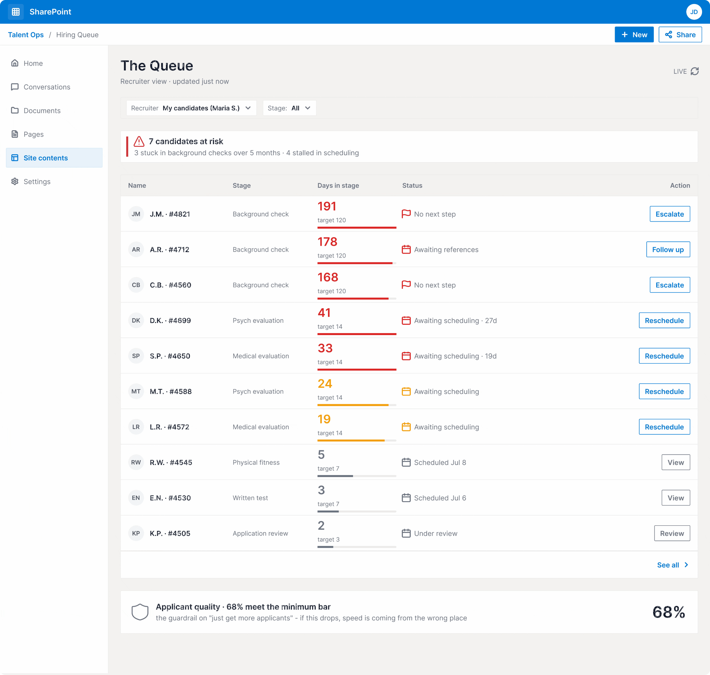
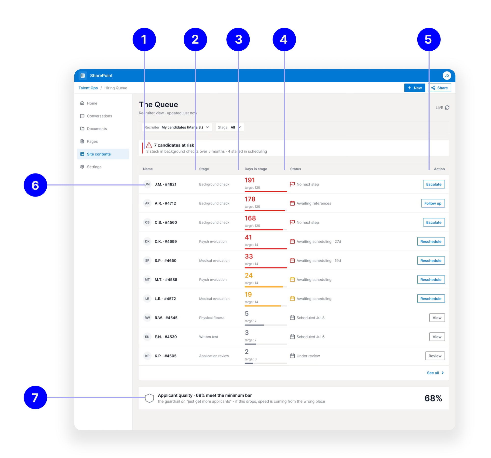

Research with candidates showed SFPD’s shortage was a time problem, not an applicant problem — which saved $900K in advertising and turned the effort toward fixing the pipeline itself.
ProblemA 500-officer shortage, with the department losing more candidates each year than it hired.
What I ownedSenior Service Design Lead & Project Lead: candidate research, the hiring dashboard, process fixes.
TeamCross-functional team across Mayor’s Office of Innovation × SFPD × DHR
TimelineApril 2025 – Sept 2025
Outcome$900K saved by redirecting from advertising to process fixes; +40 net sworn officers by the end of 2025.
Starting point
A 500-officer shortage the department was paying for in $60M of overtime a year
Since 2020, the San Francisco Police Department has faced a 500-officer staffing shortage, losing more candidates annually than it hires. It took between one and two years for an applicant to go from application to sworn officer, and the department covered the gap with overtime that grew more expensive every year.
What the research found
Candidates weren’t failing — they were waiting, and leaving
I started by asking why hiring took over two years. I interviewed in-process and recently hired candidates to trace the pipeline end to end from their side. Candidates got stuck or stalled at many points, with some dropping out during recruitment, scheduling, and the academy. The process lasted long enough that qualified candidates accepted other offers before it finished.
Losses came from time, not failure. Pass rates were good at every stage; candidates were lost to the wait.
The background check was the long pole. 142 candidates were stuck there at a median of 168 days, handled by 6 investigators.
The wait was treated as a feature. The common view was that a candidate who really wanted the job would wait, and that waiting showed commitment.
If we don’t hire faster, we will take over 10 years to close the staffing gap.
The decision
The research showed $900K in advertising wouldn’t close the gap
The decision on the table was whether the department and the mayor’s office should allocate $900,000 for advertising to address the shortfall — or resequence the pipeline so existing candidates reached the academy faster.
The existing process ran in sequence: a written test, an oral interview, a physical exam, background checks taking six months, then medical and psychological evaluations. More applicants entering a two-year pipeline would be lost the same way, so advertising would cost more for similar losses. The research showed top-of-funnel spending wouldn’t fix the shortage. That evidence helped save the $900K and bought time to explore process fixes instead — running evaluations concurrently, speeding background checks, and rearranging steps to target the real problem: time.
Key decisions
A dashboard, not a memo, so the cost of waiting stayed on screen
A memo gets read once. To challenge the belief that the wait was a test of commitment, leaders needed to see the true cost of a slow process — qualified candidates lost to faster offers — again and again as the situation changed. So I designed a continuously updated dashboard every team in the hiring process could see, built on four tenets:
Make the candidate experience impossible for a leader to ignore.
Name the bottleneck, not the person, so the truth can be acted on rather than defended.
Every number traceable to its source.
Integrate into people’s existing workflows.
Where it lives
SharePoint (embedded)Chosen
In the daily path: Lives inside the workspace staff already use.
Inherits governance: Uses existing auth, permissions, and security review.
Easy handoff: No separate app to keep alive after handoff.
? A template-constrained UI limits control over hierarchy, interaction, and data freshness.
Standalone web page
Full craft control: Complete command of layout, hierarchy, and interaction.
No platform ceiling: Freedom on data freshness and chart types.
? Adds a friction step at every use and needs its own auth; sharing data to an external tool needs additional permissions, adding time and upkeep.
One consolidated view vs. a view per user
One consolidated dashboard
Nothing to reconcile: One screen, fewer clicks, cheapest to build.
Simple to maintain: A single page for the one data analyst keeping it current.
? Too much data in one place to serve all three user needs well.
A view per user — Queue, Map, ScoreboardChosen
Right level of data for each user: Each view shows the top data points that user needs to act.
Matches cadence and authority: Daily for the recruiter, weekly for the leader, monthly for the executive.
Controls who sees what: Fits a political room where naming a unit as the bottleneck is sensitive.
? Three surfaces cost more to maintain, and numbers can drift across views without disciplined definitions.
How it worked
Three views, one set of numbers, from the recruiter’s queue to the mayor’s office
Each view matches a user’s cadence and authority: the recruiter’s daily Queue, the leader’s weekly Map, and the executive’s monthly Scoreboard. All three read from the same numbers, so a figure defended in the executive room traces straight back to a single candidate in the recruiter’s queue.

Interactive prototype — the dashboard in motion.
The Queue: recruiter view, daily
Supplements the SmartRecruiters app recruiters already use, showing where candidates are stuck and for how long.
Every candidate is ranked by time in stage past target; days-in-stage turns amber near the target and red past it (191 vs. 120 in a background check).
Each row has one action — Escalate, Follow up, or Reschedule — so spotting and acting on a stuck candidate is one step.
The Map: leader view, weekly
Helps the captain and commander decide on recruiter tooling, staffing, and resourcing across the pipeline.
Ranks stages by loss, revealing the background check as the long pole: 142 stuck at a median of 168 days, handled by 6 investigators.
Shifts the fix from ‘screen harder’ to ‘clear the backlog’; the time-to-hire trend shows re-ordered evaluations cutting time from about 22 to 14 months.
The Scoreboard: executive & funder view, monthly
A headline strip of numbers a leader can share: time to hire down to about 14 months, applications up 64%, net hires from −40 to +40.
‘Closing the shortage’ projects the gap closing before 2029 with the fix, versus about 2035 at the current pace; ‘Cost of the shortage’ puts it in budget terms ($60.1M a year in overtime, about $4.8M a year saved).
A human story sits next to the numbers, so leaders see ‘faster’ as a person going through the process.
1
Candidates at risk
A banner counts the recruiter’s at-risk candidates (7), split by why, so the day opens on the urgent work.
2
Stage
Each candidate’s current pipeline stage, so it’s clear exactly where they sit.
3
Days in stage
Time waited against the stage’s target; red past target, amber as it approaches.
4
Status
What they’re waiting on — the reason for the delay, spelled out.
5
Action
The single next step for that row — one click, not a task to remember.
6
Names, ranked by risk
Most at-risk on top, so limited time goes where a candidate can still be saved.
7
Applicant quality
A guardrail at the foot of the view (68% meet the minimum bar), so ‘just move faster’ can’t quietly lower standards.

The Queue, annotated — the seven features that make a stalled candidate visible and actionable.
How it shipped
The freed-up time went into fixing the process
With the dashboard in place, the departments made operational and service-design changes and evaluated each against hiring gains:
A “One-Stop-Shop” for the first three hiring steps — written test, oral interview, and physical test — combined so candidates save time and get results sooner.
A method I created to green-light strong candidates early, using additional oral-interview questions to identify crucial traits. Strong candidates went on a fast track with preference for appointments and next steps, plus 1-1 white-glove recruiter support.
More medical check appointments, added by SFPD, HR, and Public Health after the dashboard revealed delays.
More recruiters for white-glove support of strong candidates, and more civilian police officers to expedite background checks.
Tested AI-generated candidate summaries after successful background checks, a step that previously took officers several days, with prompts and guardrails to help officers use the right tools.
Outcome
$900K saved, and the first net-positive police hiring since before the pandemic
I measured adoption, decisions, and metrics: usage frequency, shifts in decision timing, and changes in hire review timing after exposure. Because the background check was the key bottleneck, I measured background time before and after the team’s changes — updated tools, upstaffing, and tracking speeds for stronger candidates, all run through the dashboard.
$900Ksaved by redirecting from advertising to process fixes
+40net-positive sworn officers by the end of 2025 — the first net-positive police hiring since before the pandemic
6 mo → 2 moaverage background-check time
1 yr → 4 molateral candidate hiring process
What I’d carry forward
Show the problem exists before anyone spends money on it
01
Visibility, rather than effort, was the real challenge. The most impactful thing I did was demonstrate that a problem existed before anyone invested money in decisions.
02
How you frame a figure decides whether people act on it. Presenting a finding as a neutral system fact, rather than an accusation, kept a fix moving that might have stalled over blame.
03
Meet people in their workflow. For leaders unfamiliar with metrics, I turned the Mayor’s communications dashboard into an automated monthly email and helped update the SFPD leadership’s email with clear guardrails.
04
Data alone isn’t enough. The Mayor’s team always had more questions than the numbers answered, and decision-makers needed a monthly check-in to understand the changes.